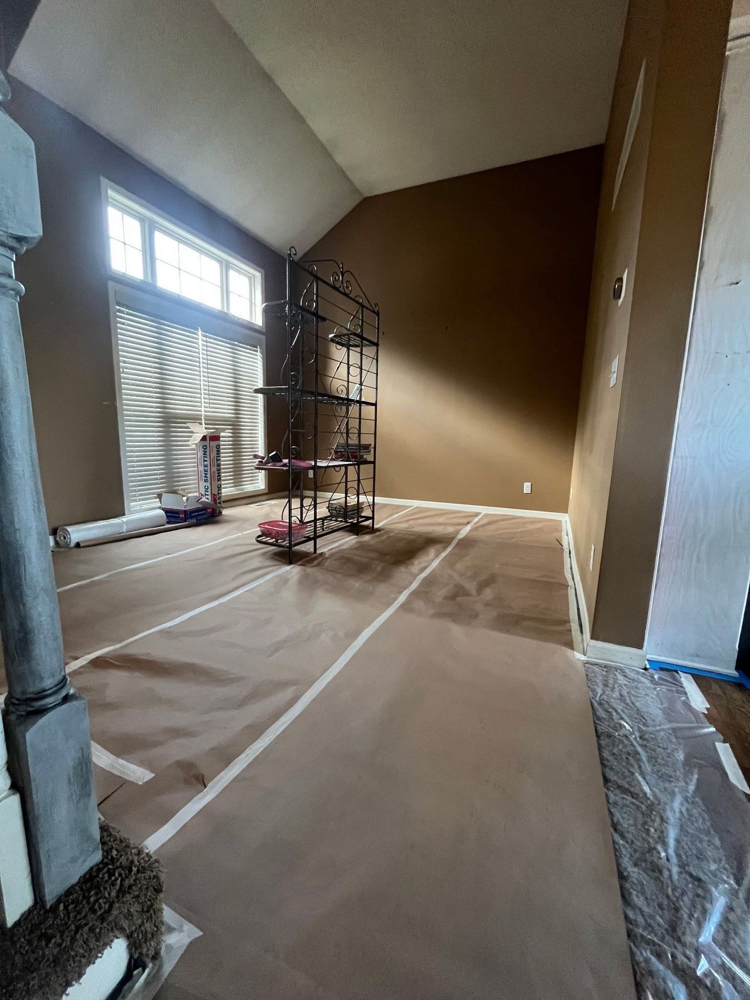
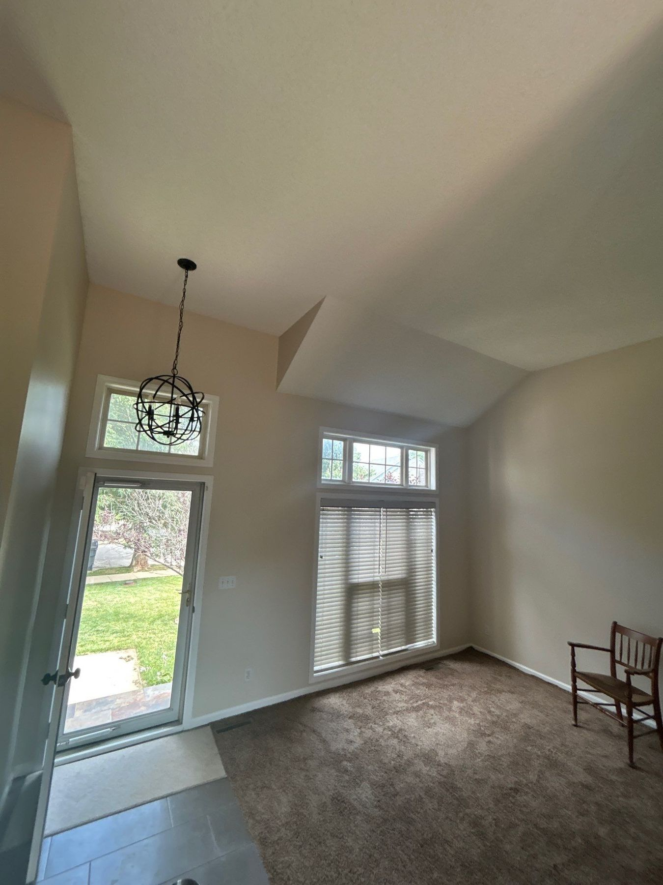

Crisp lines, clean job sites, and your home treated like our own — from single accent walls to whole-home repaints.
Get Your Free EstimateInterior painting is personal — we're working inside your life, not just on your house. That shapes how every EverPro interior job runs:
Walls, ceilings, trim, doors, accent walls, water-stain and drywall-damage repair — if it's inside, we handle it, with Sherwin-Williams products matched to each surface.
Schedule a Free Walkthrough


Before a single can is opened, your home gets locked down. This is the part of the job you'll never see in the finished photos, and it's the part that makes the difference between a clean project and paint where it doesn't belong:
It's your home, not our job site — that's the standard, and it's why the only evidence we were ever there is the paint.
Schedule a Free WalkthroughAlmost always, yes. We work room by room so your home stays livable, and we'll plan the sequence around your family's routine during the walkthrough.
A few rooms typically take a couple of days; whole-home repaints run longer. Your written quote includes a clear timeline before we start.
Yes — Ethan walks through color and sheen choices with you during the estimate, including what holds up best in high-traffic areas, kids' rooms, bathrooms, and kitchens.
It depends on the rooms, ceilings, trim, and surface condition — not just square footage. Read how we price every job, then get your real number with a free walkthrough. The number we quote is the number you pay.
Free walkthrough with the owner. Detailed written quote. A number that holds.
Request a Free EstimateOr call/text 913-210-1041